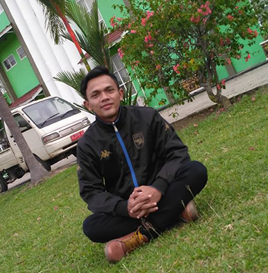
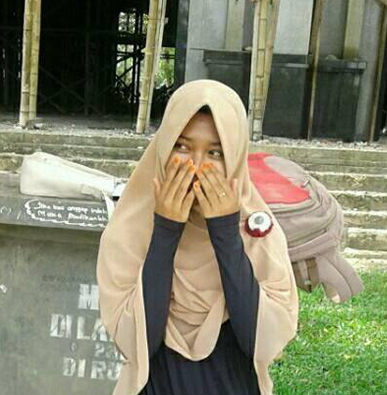
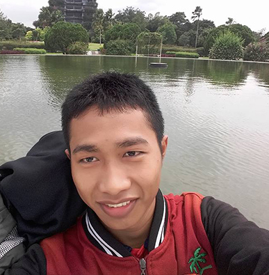

EDUCATION
Sekolah Dasar
Sekolah Menengah Pertama
Sekolah Menengah Atas
Perguruan Tinggi
PROFFESIONAL SKILL
Computer Technician
Saya mempunyai skil di bidang komputer, khususnya sebagai seorang teknisi komputer. Saya mampu melakukan bongkar pasang Laptop maupun PC. Pekerjaan tersebut sudah sering saya lakukan di waktu umur 16 tahun.
Networking Support
Saya juga mempunyai skil komputer di bidang jaringan, kegiatan ini juga sudah saya sering lakukan ketika saya masih sekolah di SMA. Karena walupun SMA nya di Pondok Pesantren akan tetapi saya menyisihkan waktu untuk belajar jaringan setelah ngaji
Design Graphics
Saya belajar design graphics di usia 16 tahun, pertama kali saya belajar design graphis menggunakan aplikasi adobe photoshop.
Web Programming
Saya belajar web programming sekitar di usia 18 tahun, pertamakali saya belajar web programming terasa amat sulit, namun saya tetap berusaha belajar sampai saat ini. Dan untungnya di semester 4 ini saya menempuh mata kuliah web programming
TESTIMONIAL
what your friends say about you?
Mas Samsul lebih kreatif lagi ya buat Artikel di Blog. Tetep Istiqomah nulisnya biar makin banyak yang saya baca
— Eko Prasetyo

— Dika Pristian Putri

Terimakasih banget mas Samsul. Udah mau benerin Laptop ku. Laptop ku sekarang udah bisa dipakai lagi. Semoga sukses terus buat mas Samsul ya. Aamiin.
Makasih bro. Udah mau bantu membuat website kemarin sebagai final project, kapan-kapan saya minta bantuan lagi ya...?? Jangan cepet kapok bantuin saya. HAHAHA...!!!
— Ahsanil Ihsan

PORTOFOLIO
WEBSITE PERSONAL

CURRICULUM VITAE